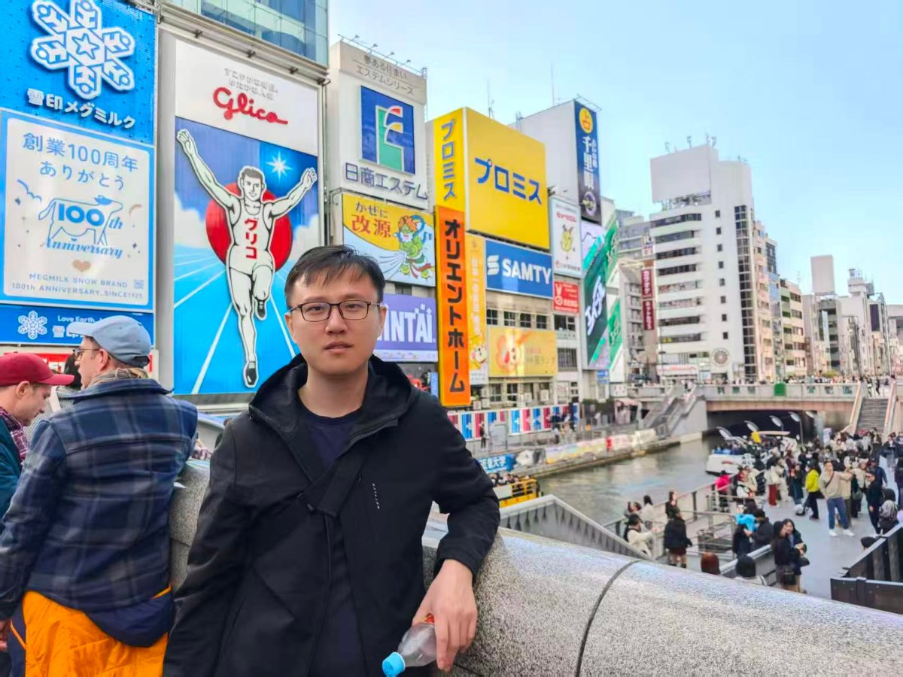

Wafer-to-Wafer Hybrid Bonding
Data-driven process integration for wafer-to-wafer hybrid bonding.
Hi, I'm
Senior Research Engineer · Data & AI Practitioner
Singapore-based engineer with 10+ years spanning semiconductor process R&D and data-driven engineering.

“Make complex things simple and elegant.”
Background, expertise and what I'm focused on
I'm YU HAITAO, a Singaporean engineer with a decade of experience spanning semiconductor manufacturing and research.
Along the way I earned a Master's in Computer Control and Automation from NTU and built a strong data & AI skill set.
Get in touch →Selected work across semiconductors, data & AI, and software
Data-driven process integration for wafer-to-wafer hybrid bonding.
Developed nano-TSV etch processes for wafer backside power delivery.
Process development of Si and SiN waveguides for high-speed optical transceivers.
Developed Si moulds for nano-imprinting to enable high-volume manufacturing of consumables used in DNA sequencing detection equipment.
Owned Lam2300, SEZ SP4300 and DV38 platforms with multiple yield and cost projects.
Built with AI vibe coding: a full-stack stock intelligence platform.
Built a fully local RAG knowledge base with LangChain and FAISS for private document Q&A.
Supervised fine-tuned Qwen2.5-0.5B with QLoRA and prompt engineering.
Real-time object detection pipeline combining YOLOv8 with OpenCV for live video inference.
Developed a customer invoice dashboard website using Next.js.
Peer-reviewed work in advanced packaging, photonics and heterogeneous integration
2026 IEEE 28th Electronics Packaging Technology Conference (EPTC)
2024 IEEE 74th Electronic Components and Technology Conference (ECTC), 1581-1586
Advanced Fabrication Technologies for Micro/Nano Optics and Photonics XVII …
Optical Interconnects XXIV 12892, 87-93
2024 IEEE 26th Electronics Packaging Technology Conference (EPTC), 584-587
2023 IEEE 73rd Electronic Components and Technology Conference (ECTC), 617-622
2023 IEEE 73rd Electronic Components and Technology Conference (ECTC), 1880-1884
CLEO: Applications and Technology, AM3M. 4
2023 IEEE 25th Electronics Packaging Technology Conference (EPTC), 12-15
2022 IEEE 24th Electronics Packaging Technology Conference (EPTC), 138-141
2022 IEEE 24th Electronics Packaging Technology Conference (EPTC), 119-123
2022 IEEE 24th Electronics Packaging Technology Conference (EPTC), 142-145
A decade of semiconductor engineering, research and education
Current position
Research on wafer-to-wafer hybrid bonding process integration with a data-driven approach.
Institute of Microelectronics (Singapore)
Led etching process development across metal, dielectric, Si and mask materials.
UMC (Singapore)
Mainly responsible for Lam Research systems: wet clean and dry etch, with daily maintenance and improvement projects.
Teknor Apex (Singapore)
Material characterization and mechanical testing for raw materials and finished goods.
Nanyang Technological University (NTU-EEE)
Core modules: Machine Vision, NLP, Machine Learning, Robotics and Intelligent Sensors.
Nanyang Technological University (NTU-MAE)
Final-year project: a VR application for vision improvement in medical treatment.
Nanyang Polytechnic
Final-year project: an Android app for monitoring combat missions.
What keeps me curious outside of work
History, science fiction and popular science books.
Keeping a weekly running routine and enjoying the balance of pace and thought.
Capturing cities and nature, with a soft spot for street and landscape.
Building full-stack apps through AI pair programming.
How we can work together and the value I bring
Etch process development, defect improvement and equipment projects.
RAG pipelines, LLM fine-tuning, computer vision and data dashboards.
Technical consulting, workshops, or simply a coffee chat about ideas.
Have an idea? Let's make it real.
Start a conversation →Feel free to reach out through any of these channels